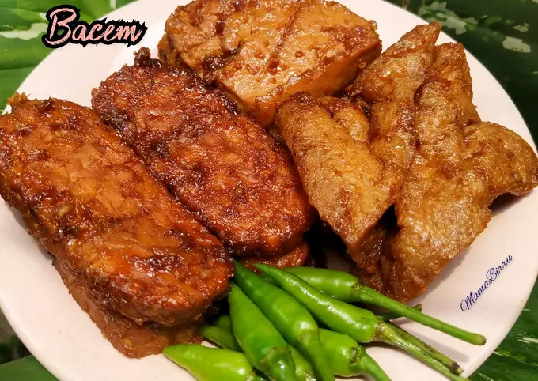

Tahu Tempe Bacen aka Braised Tofu Tempeh
Description
Tempe dan Tahu Bacem (Javanese Braised Tempeh and Tofu) is one of
Indonesian tofu and tempeh dishes. It originated in Jogjakarta or
Yogyakarta in Central Java. The food from that area tends to be sweeter.
However, it is not overly sweet since they balance it with tamarind water
and other spices making it very flavorful. Bacem means slowly boiling in
low heat. Because of the way it is cooked, the tofu and tempeh become very
flavorful. So, if you know anyone who doesn't like tofu due to its bland
flavor, this is the recipe you should try because all the spices are
absorbed during boiling making them very flavorful.
Ingredients
- 400 gr extra firm tofu cut into 3 x 3- inch
- 500 gr tempe cut into triangles
- 4 cups coconut water you may need more
- 2 Tbsp cooking oil divided
- 3 Tbsp kecap manis or sweet soy sauce
- 1 tsp salt
- 100 gr coconut sugar or use 60 gr brown sugar
Steps
-
Place spices to grind in a food processor and grind into a paste. Add a
bit oil to help it goes if needed
-
Place the cut tofu and tempeh inside a large pot, add in 4 cups of
coconut water until it just barely covers the tofu and tempeh.
-
Add ground spices, bay leaves, and seasonings. Bring to a boil and then
lower to let them gently simmer until the water evaporates half and then
turn the tofu and tempeh over and boil until the water is almost all
evaporated and the spices are absorbed
- Remove from the pot and let them cool down
-
Preheat oil and pan fried the tofu on all sides until golden brown
before serving and serve with chili if you like
Home
Source